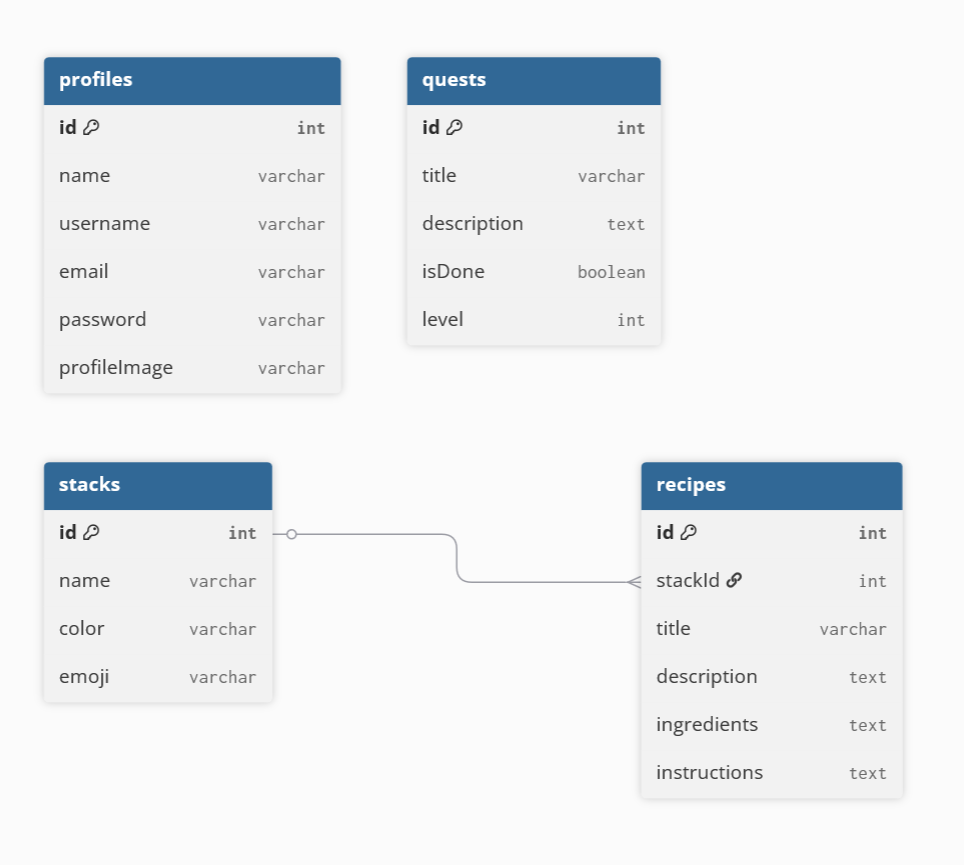
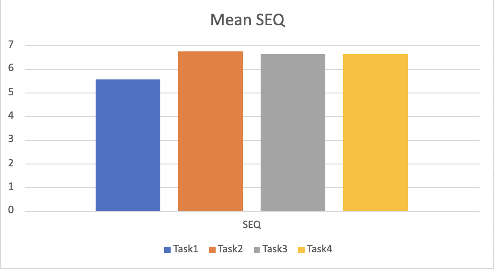
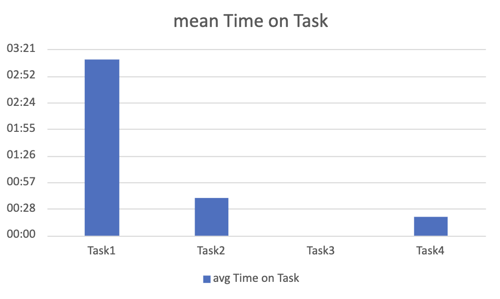
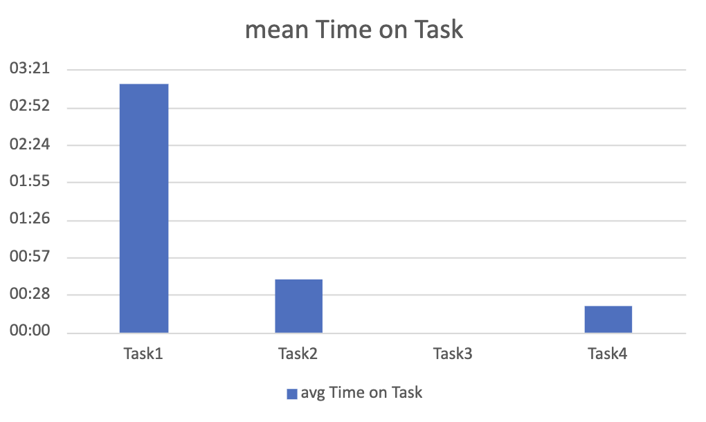
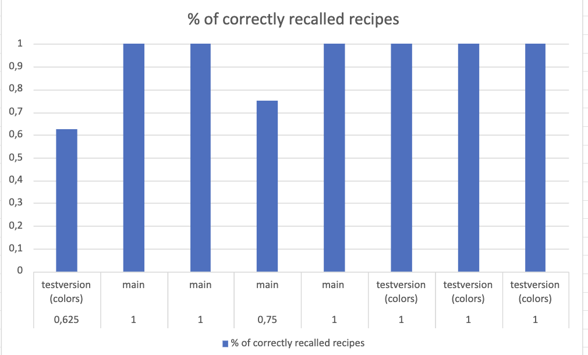
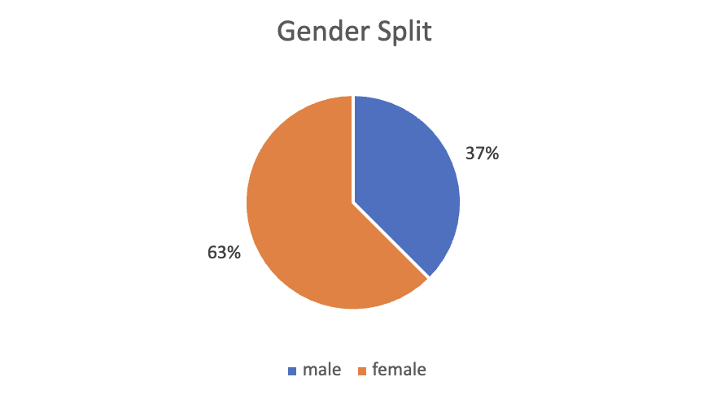
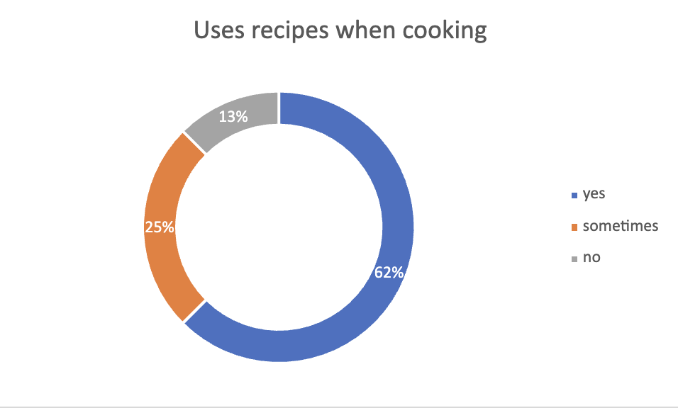

Overview
Short description: Oops! I can cook is a learning app for beginner chefs. Users can create and edit their own profiles, learn pre-made recipes in a monthly “Quest mode”, and add their own recipes and search for them.
Team Members
- Antonia Hruschka
- Katharina Lipp
App Concept
Use Case
Oops! I can cook is designed to teach beginners how to cook from scratch, build confidence in the kitchen, and stay motivated to prepare home-cooked meals instead of relying on takeout.
Target User
Oops! I can cook is for inexperienced home cooks who want to start eating healthier and learn to cook for themselves.
User Flow / Hi-Fi Prototype
Explore the interactive prototype here:
Figma Prototype – Oops! I can cook
User Flow

Database Structure of Oops! I Can Cook

Heuristic Evaluation – Conclusion
The evaluation suggests that the app’s core structure is sound, but several small to medium usability
problems accumulate and could noticeably slow down or confuse users—especially beginners, who are
the target audience. Navigation clarity, consistency, and visibility of system status are the most
prominent themes across the identified issues.
Addressing the high-severity items, such as navigation clarity, missing UI elements, and unclear
dropdown behavior, will significantly improve the overall user experience. Enhancing the Quest
screen’s visual clarity and motivational cues will further support the app’s goal of keeping users
engaged and encouraging repeated use.
Hypotheses & Testable Questions
Main Hypothesis
H1: Visual cues in the interface significantly impact how users interact with the app, influencing navigation efficiency, content recognition, and overall enjoyment.
Testable Questions
Navigation
Do first-time users navigate to main features more successfully with or without onboarding instructions?
- IV: Onboarding instructions present vs absent
- DV: Time to reach each feature
Visual Design – Recipe Cards
Do colored recipe cards improve users’ ability to distinguish recipes compared to neutral cards?
- IV: Card color (colored vs neutral)
- DV: Distinguishability (accuracy, error rate)
Gamification – Quest Screen
Do gamified quest screen elements increase users’ perceived enjoyment?
- IV: Gamified elements
- DV: User enjoyment
User Test Results
The aim of our user test was to find out, how the visual design of our app impacted the user's interactions with it. We specifically looked at navigation efficiency, content recognition, and overall enjoyment. We also wanted users to test each of the app's features, so the tasks are
8 users participated in user testing. We used SUS and SEQ to assess perceived difficulty and usability, as well as interviews to gauge mental models, expectations and pain points.
The raw collected data and the user test documents can be found here:
CCL3 - User Test Excel Sheet
CCL3 - User Test Document
Quantitative Results - Key insights
Users rated the usability quite high at 88,4375 on average. The app performed well in terms of SEQ as well, with an overall average rating of 6,3 across all tasks.
!! PLEASE NOTE: I accidentally switched the numbers around, so 1 was the easiest and 7 the most difficult. I very confidently stated the wrong figure during our presentation. Sorry! I corrected the numbers in our documentation. !!

Task 1
Q1: Do first-time users navigate to main features more successfully with or without onboarding instructions?
For this task, users had to create an item (recipe, stack, etc) in the app and then go back to find and edit it.
We asked some users to fulfill the task with clear and thorough instructions, and the rest with very simple instructions. Users that had more extensive instructions completed the task slightly faster than those without.
This is also the task with the highest task-time and the most user-errors, most likely due to the fact that users were still unfamiliar with the user flow and functionalities of the app.
 

Task 2 and Task 3
Q2: Does using colored recipe cards improve users’ ability to distinguish recipes compared to neutral-colored cards?
To answer Q2, we had users complete two tasks: one to locate specific recipes, and the other to see how many recipes they recalled after a short break.
Users were able to correctly find and identify on average 84.3% of recipes and they recalled 92.1% correctly after a short break. Important to note for task 3 is, that this task also showed fairly clearly, that the color of the recipe cards was not determinative to how well users could distinguish and recall recipes.

Task 4
Q3: Does the gamified design/ the gamified elements on the quest screen increase the users perceived enjoyment when using the feature?
This task just consisted of testing the quest feature and assessing how users interacted with it. Most users responded very positively to the feature, and found it easy to use, with the mean SEQ score for this task being 6.625. This task showed quite well, how some users prefer to use gestures like swiping over pressing buttons to advance the quest cards. Some never pressed the button to finish a quest, but rather used the X at the top left corner of the screen to exit out of the quest.
Conclusion
Overall, the data shows that users found the app intuitive and easy to use. Even without thorough instructions, users can navigate the app successfully. Slight visual changes seem to have little to no effect on the users' ability to find and recall content.
The gamified quest-feature adds positively to the experience, without harming usability.
Qualitative Results - Key insights
The qualitative data of this user test was collected by conducting an interview before and after the tasks, and having the participants think out loud during the tasks as well. This method yielded a lot of useful feedback that we were able to use to improve the app.
Demographics and Pre-task Interview
8 users participated in user testing, with their ages ranging from 18-29. 3 participants were male and 5 female. 6 out of 8 indicated that they liked to cook, even though only 3 participants stated that they cooked for themselves 5-7 times a week.
63% use recipes most of the time or everytime when cooking, 25% use them only a few times, and 13% don't use them at all.
Most would rate themselves fairly confident in the kitchen.


Post-task Interview
All participants reacted favorably to the app, with 75% mentioning that they would use the app in their daily life.
What users liked the most:
- Visual design and aesthetics
- Simple user flow
- Quest concept
- Recipe customization and organization
Pain points:
- Difficulties with android interface (all participants were iOS users)
- Visibility - small UI elements due to display size or buttons disappearing behind the keyboard or navigation Bar
- Stack usability
Some bugs came up during user testing and the demonstration, like for instance the save button being cut off at the bottom on some screens, the search bar taking up too much space on the profile view, or that there was no oveview stack/folder for all created recipes. At the time of writing, these bugs have been fixed.
Conclusion
Overall, users responed very positively to Oops! I can cook. Most noted the gamified and highly stylized components as standout features. The most glaring issues during testing were definitively the unfamiliarity with android interfaces, as well as the layouting issues on a smaller screen. However, the app definitely shows potential, with 75% of users indicating that they would use it in their daily lives.
Changes to the App
After reviewing the user test results, we implemented several improvements throughout the app.
We updated the styling of the recipe and stack forms to create a cleaner and more consistent visual experience.
The Quest feature was further gamified to increase engagement and better support user motivation.
On the profile screen, we improved the UI by splitting the layout into thirds and reducing the overall height
of both the profile section and the search bar, making navigation clearer and more comfortable on smaller screens.
We also redesigned the stacks by giving each one its own color and adding optional emojis — an idea inspired
directly by user feedback, as one participant mentioned that emojis felt “cute” and more personal than images.
These changes helped refine the overall look and feel of the app while addressing real user needs.
Final Reflections
Antonia – Final Reflection
...
Katharina – Final Reflection
For me, this CCL was one of the most relaxed ones at the beginning, but toward the end it definitely became more stressful. Our first concept for the app came together quickly, both in theory and in the initial code skeleton. What challenged me the most was the styling and visual design elements. I had a clear picture in mind and it looked great in Figma, but once it appeared on a real phone, it sometimes felt completely different or even strange. I also kept wanting everything to be perfect instead of simply functional, which definitely cost me some time.
One of the most interesting parts of the project was seeing people actually test the app we built. Some users gave feedback I would have never expected, like the vegetarian option for the Quest feature, which was immediately obvious to the vegetarian participant but something that hadn’t crossed my mind at all. Sadly there was no time to implement this.
I really enjoyed working in a team, even though I was a bit hesitant at first. But Toni kept me motivated, and sharing the struggles along the way made the process so much nicer. Even though I picked up more of the coding in the second week, Toni handled the user test development and many other tasks. The split wasn’t planned this way, but it worked out very well, and I feel like in the end we both contributed equally.
Love to Toni. ❤️